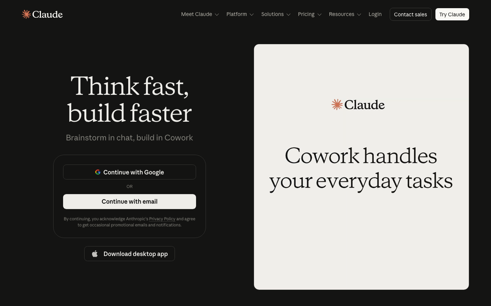
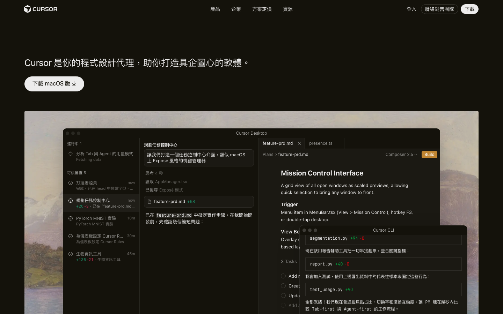
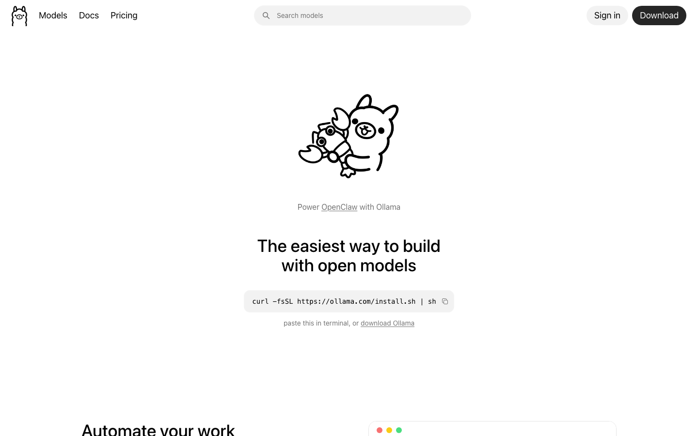
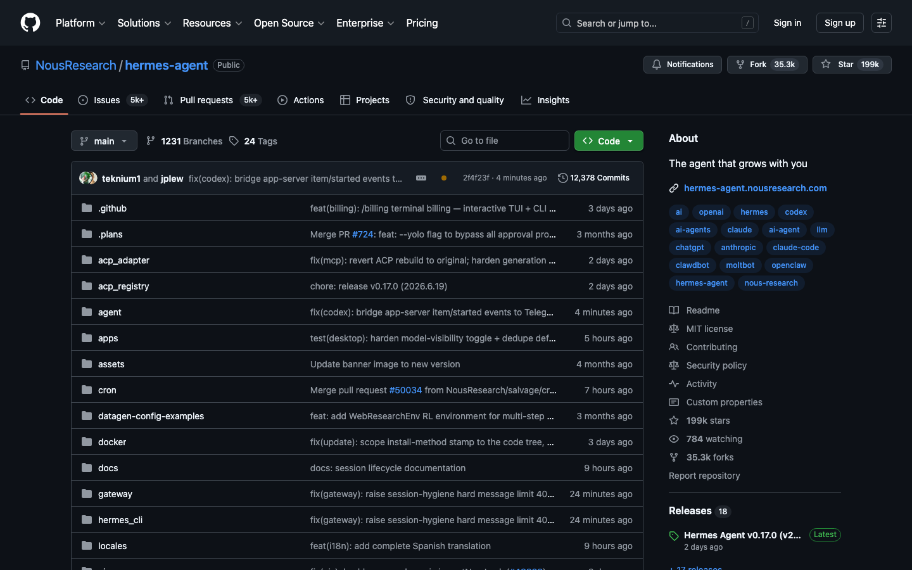
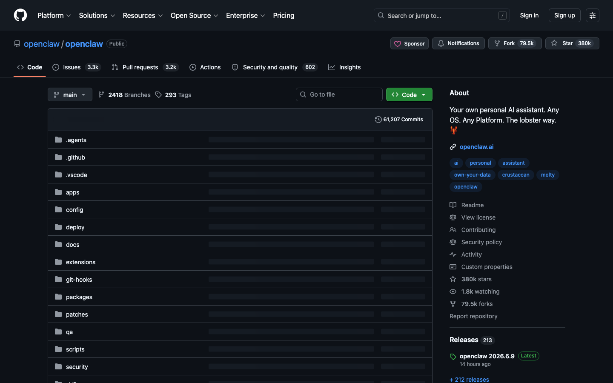

1
/
0
BEXS AI 學院 · 完全新手
第一次用 AI?
這份就夠了
上手步驟 · 工具科普 · 常見誤區 —— 全部白話、零基礎
不用懂程式
10 分鐘看懂
少走冤枉路
第一個要用的
Claude 網頁版長這樣

👉 上
claude.com
，用 Google 或 email 登入就能用。
打字聊天
就能叫它做事 —— 這是你第一步要熟的地方。
START
完全新手 · 3 步上手
1
先用網頁版
：上
claude.ai
，不用裝任何東西，打字就能用。
2
把事情講清楚
：給它「
給什麼 + 要什麼 + 什麼格式
」。例：「這份 PDF 幫我整理成 5 個重點」。
3
想讓 AI 真的動手
（改檔案、跑程式、自動化）→ 再進階到
Claude Code
+ 技能包。
💡
一句話
：先把網頁版玩熟（會「講清楚需求」），再談進階。九成的人卡關都是太急著裝工具。
工具科普
這幾個到底差在哪?
⚙️
Ollama
引擎
一個指令，把
開源 AI 模型
（Llama / Qwen）裝到你電腦上跑。本地、免費、私密。
🤖
Hermes
本地助理
開源助理框架（Nous Research）。
會自己寫技能、記得你、能用工具做事
，可接 Ollama 跑本地 $0。
🦞
OpenClaw
本地 agent
開源本地 agent。接到
LINE / Telegram
等聊天軟體，自動跑多步任務，模型雲端本地隨你選。
💻
Cursor
寫程式
AI
程式編輯器
。用雲端最強模型幫你寫程式、改 code。給有在寫程式的人。
介面長這樣 · 1/2
它們打開長什麼樣?（可點圖進官網）

Cursor
AI 程式編輯器
cursor.com ↗

Ollama
本地模型引擎
ollama.com ↗
介面長這樣 · 2/2
它們打開長什麼樣?（可點圖進 GitHub）

Hermes
本地助理框架
GitHub ↗

OpenClaw
本地 agent
GitHub ↗
關係圖
一句話看懂它們的關係
⚙️
Ollama＝引擎
：負責「跑模型」。本身不會做事，是給別人用的動力。
🤖🦞
Hermes / OpenClaw＝會做事的助理
：拿引擎（或雲端模型）+ 工具，去幫你完成任務、自動化。
💻
Cursor＝專門寫程式的編輯器
：跟上面不同路，是寫 code 的人在用。
🎯
新手怎麼選
：日常用事 → 先
Claude 網頁版
；想私密/免費/離線 →
Hermes 或 OpenClaw + Ollama
；寫程式 →
Cursor / Claude Code
。
LLM 科普
「大語言模型」是什麼?
🧠
LLM（大語言模型）
＝讀過海量文字、會聽人話、會生成文字的 AI。你用打字叫它做事，它用文字/表格/程式回你。Claude、GPT 都是 LLM。
🟣
Claude
Anthropic
擅長寫作、推理、寫程式、長文。
🟢
GPT
OpenAI
通用、生態最大。
🔵
Gemini
Google
多模態、整合 Google。
🟠
Qwen / Llama
開源
可下載自己電腦跑（Qwen＝阿里、Llama＝Meta）。
關鍵觀念
雲端 vs 本地 · 開源 vs 閉源
☁️ 雲端模型
Claude / GPT / Gemini。
最強最聰明
，但要
網路 + 花錢
，資料上傳到對方伺服器。
🏠 本地模型
Qwen / Llama 跑自己電腦。
免費、私密、離線
，但比雲端
弱、慢、吃硬體
。
🔓 開源
可下載自己跑、自己改（Qwen / Llama）。
🔒 閉源
只能用它的服務、下載不了（Claude / GPT）。
💡
參數量（B＝十億）
：數字越大通常越聰明，但越慢越吃記憶體。80B 比 7B 強，但也重很多。
API
「API」是什麼？三種付錢用 AI 的方式
🔑
API key
＝一把「鑰匙」，讓
程式 / 工具
能去用 AI 的服務（Cursor、Hermes 接雲端模型都要它）。按「
用多少付多少
」計費。
📱
① 訂閱版
最簡單
claude.ai Pro：
月費吃到飽
，網頁直接用。
新手就用這個
。
🔑
② API
進階
按
用量
付費，給工具 / 程式串接用。用越多付越多，要接自動化才需要。
🏠
③ 本地
免費
Ollama 跑自己電腦：
免費、不用 API、不用網路
，但模型較弱。
🎯
老師建議
：新手先用
① 訂閱版網頁
，別一開始就碰 API。等你要接工具自動化、或想省錢跑大量，再學 API / 本地。
避雷 · 1/2
新手最常踩的誤區
❌
以為要會寫程式
—— 不用!打字講人話就行,跟請一個助理一樣。
❌
一開始就裝一堆工具/技能
—— 貪多嚼不爛。先把網頁版玩熟,再進階。
❌
需求講太模糊
—— 「幫我弄一下」AI 會猜錯。要講「給什麼、要什麼、多長」。
避雷 · 2/2
新手最常踩的誤區
❌
全盤相信 AI 給的數字/事實
—— 重要的(價格、新聞、數據)要它
附來源
、自己核對。AI 會「自信地講錯」。
❌
用本地小模型,期待 Claude 等級
—— 本地省錢私密但較弱,別期待一樣聰明。
❌
雞毛蒜皮也丟最貴的模型
—— 大砲打小鳥。簡單事用便宜/本地的就好,省錢。
老師的話
Rick 想跟你說
👨🏫
你不用會寫程式。
我教的這些，照著做就會 —— 怕的不是「不會」，是「不開始」。先動手玩，玩錯也沒關係。
🐢
慢慢來。
一個工具用熟，勝過一次裝十個。我帶你少走冤枉路，但路還是你自己走。
🚀
AI 是放大器。
它讓「知道自己要什麼」的人變超強。所以先想清楚你要什麼，再叫它做。
🙋
有問題就問，別自己卡死。
卡關是正常的，問了就過 —— 我在。
新手路線
網頁版玩熟 →
進階技能包
先會「講清楚需求」,再加工具。慢慢來,你會變高手。
BEXS AI 學院
會員 / 學生專用
← → 翻頁 · 點圓點跳頁